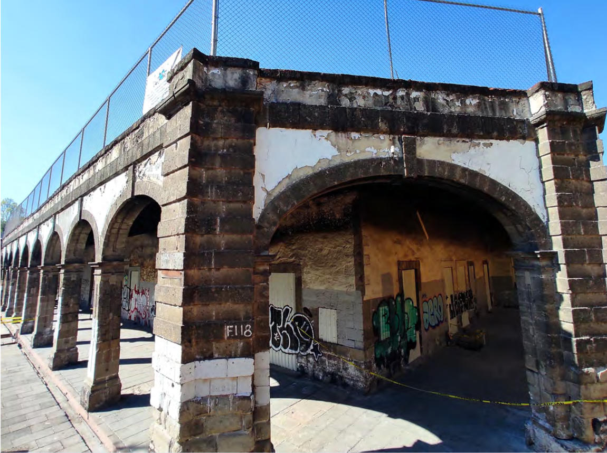
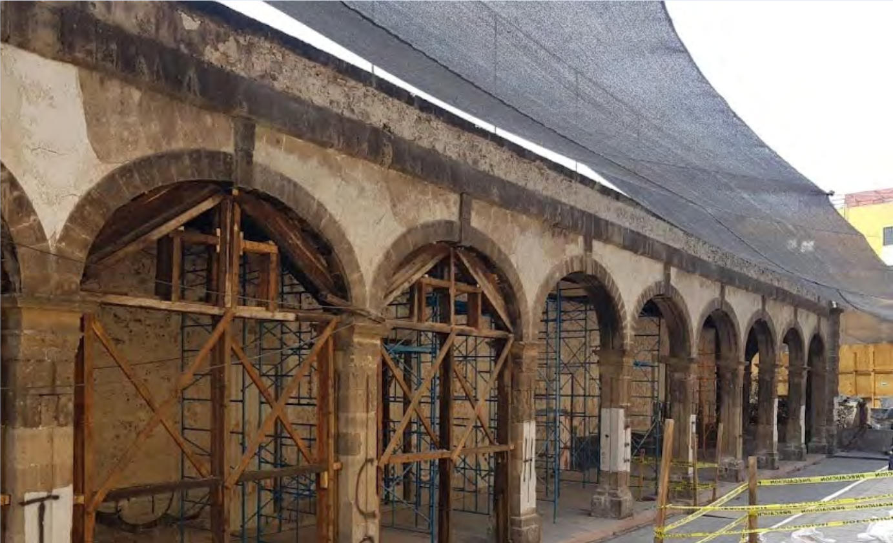
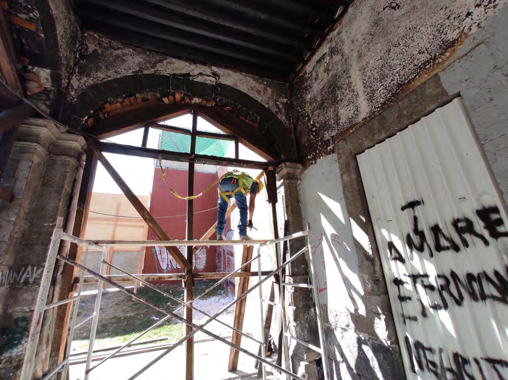
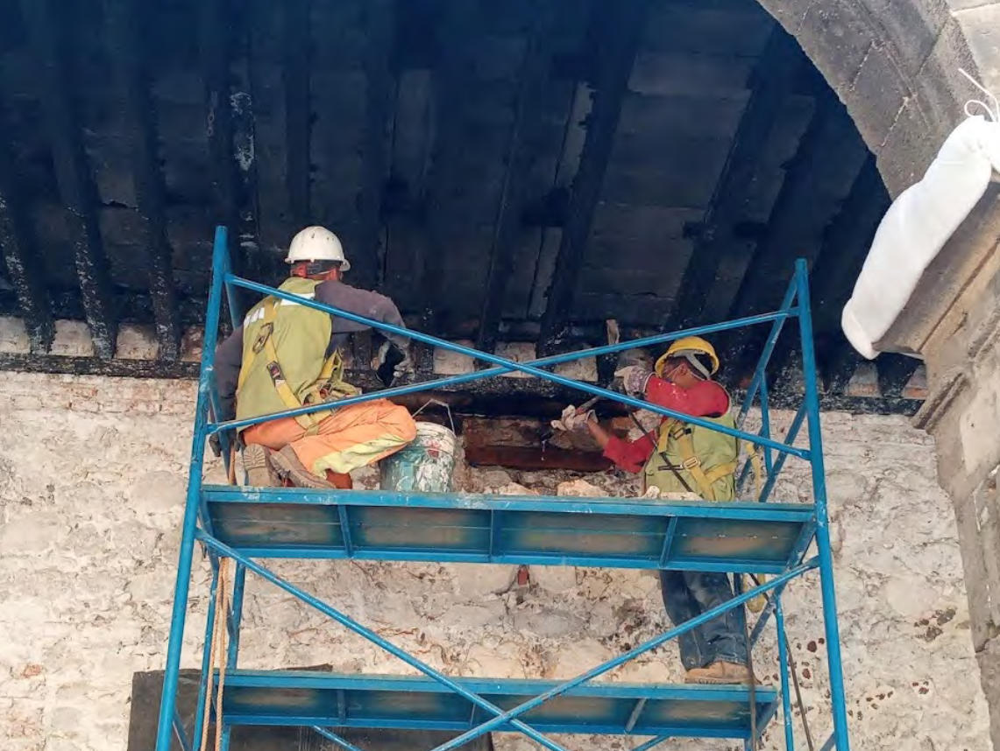
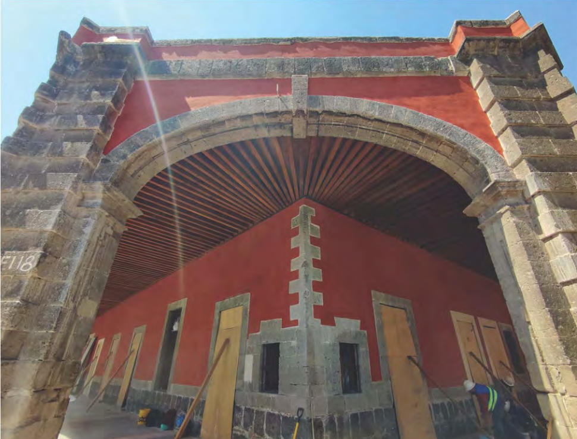
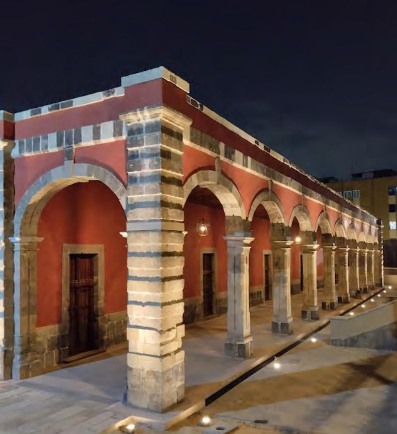

Proyecto De Mantenimiento, Conservación Y Restauración Del Patrimonio
La Garita de San Lázaro forma parte de un conjunto de edificaciones construidas en el siglo XVII que funcionaron como puntos de control aduanal en la Ciudad de México durante el periodo colonial. En estas garitas, el Imperio español recaudaba impuestos a través del Consulado de Comerciantes, consolidando su importancia económica y administrativa hasta las Reformas Borbónicas. De las trece garitas originales, actualmente solo sobreviven dos, lo que convierte a la de San Lázaro en un testimonio excepcional del sistema fiscal y urbano de la época.
Su ubicación no es casual, ya que responde a un punto estratégico desde tiempos de la conquista de Tenochtitlán. Situada en una zona clave de conexión fluvial, este sitio fue utilizado por Hernán Cortés como base para el asedio a la ciudad, lo que le otorga un valor histórico aún más profundo al vincularla con uno de los episodios más trascendentales de la historia de México.
Con el paso del tiempo y la modernización de la ciudad, muchas garitas desaparecieron junto con los canales y puentes que les daban sentido. Aunque el entorno original de la Garita de San Lázaro se transformó drásticamente, el edificio principal ha logrado sobrevivir, aunque en condiciones de abandono y deterioro.
Al momento de su restauración, la garita presentaba diversos daños físicos, biológicos y estructurales, como grietas, humedad y riesgos en su estabilidad. Ante esta situación, su restauración se justifica no solo por la necesidad de preservar su integridad material, sino por su alto valor histórico y patrimonial. La intervención propuesta se basó en criterios de conservación como la mínima intervención, la compatibilidad de materiales, la reversibilidad y el respeto por su valor histórico, con el objetivo de garantizar su permanencia como un legado cultural significativo para la ciudad.
En este documental se explora el proceso de restauración de la Garita de San Lázaro, así como el valor patrimonial del edificio, su relación con su entorno y los desafíos de su preservación, de la mano de los arquitectos Fernando Vidaurri Padilla y Ángel Vélez García, y del arqueólogo Juan Carlos González Hurtado. Este documental fue realizado por los alumnos de la materia Multimedia de la División de Ciencias y Artes para el Diseño de la Universidad Autónoma Metropolitana.
La Garita de ayer y hoy: de la época colonial al México moderno.
Breve historia de la garita y su restauración
La restauración de la garita fue un proceso lento lleno de desafíos, que comienza con una evaluación del inmueble para determinar las posibles estrategias para su restauración, pero siempre teniendo en cuenta la meta más importante: el respeto por su valor histórico y la mínima intervención





